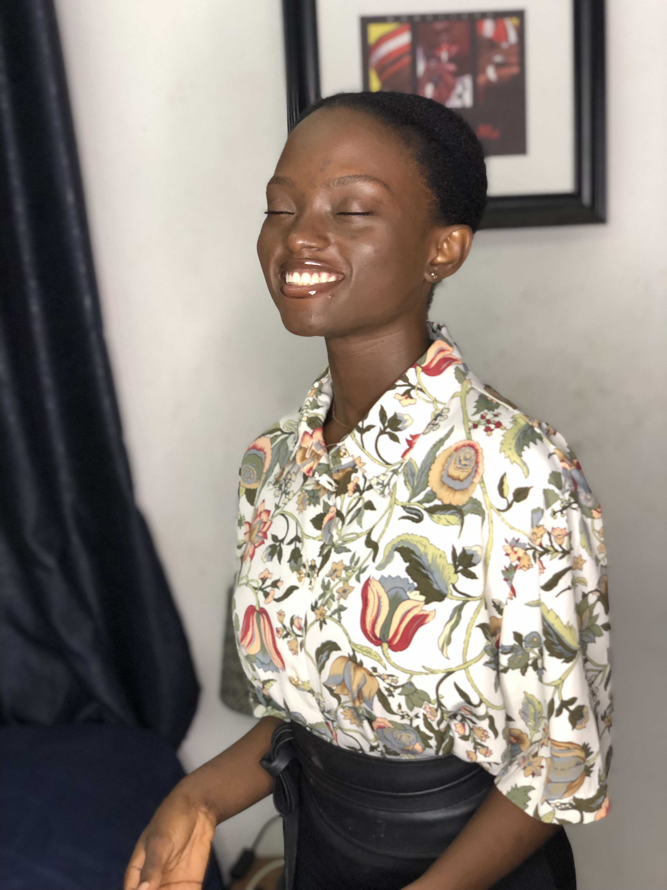

Hello, My name is
Oluwabi Oluwabusolami
I'm a junior Frontend developer(in training).
I've designed some beautiful webpages using HTML and CSS, i also enjoy developing interactive user interface. Lately though, I've found myself intentionally working on my communication skills. I have started reading and listening to others, taking on new habits (also found myself texting more, I'm amazed) and becoming more intentional with everything I do.
Check out my work and let connect.
